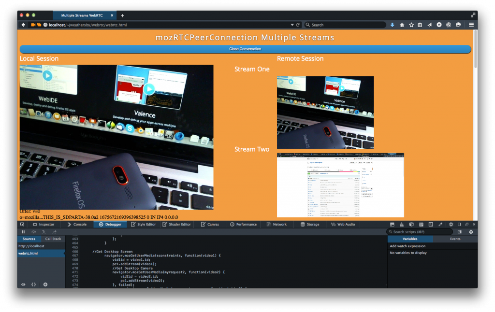
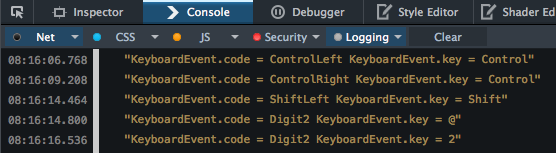
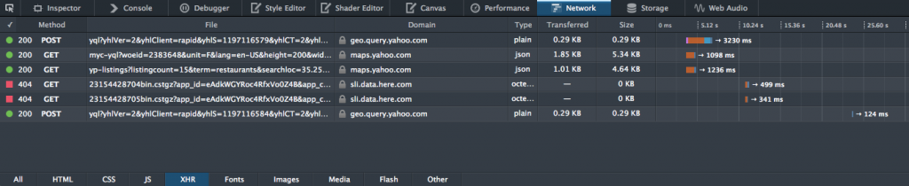
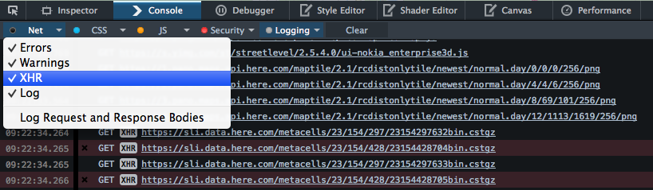

現提供 64 位元版本，當然還有更多功能
Mozilla 在慶祝 Firefox 十歲生日的同時，亦發表了 Firefox 開發者 (Developer) 版本，也是首款特別為開發者所打造的瀏覽器。我們在當時另一併宣佈了 Firefox 的 64 位元版本計畫。今天很高興向大家宣佈此計畫的下個階段：除了已支援的 OS X 與 Linux 平台之外，64 位元的 Firefox 開發者版本現已可安裝於 Windows 上使用。
若要透過瀏覽器提供豐富體驗且能媲美桌機版 App 的品質，64 位元版本絕對是重要的一步。先來看看此版本中值得搶先一提的功能。如果你還沒下載開發者版本，那還在等什麼？

在 Windows 的 64 位元開發者版本中執行 Unreal 展示程式
可執行更大型的 App
32 位元版本瀏覽器受限於 4GB 位址空間。而這種空間容量又會因眾多規格所造成的分化 (Fragmentation) 問題而更為狹小，同時 Web App 只會越來越大。若遊戲是以瀏覽器為執行平台，且要達到如原生 App 的高效能 ─ 即如 Epic Games 公司的「Unreal Engine」─ 則往往遠超出傳統 Web App 的容量。這些遊戲具備大量檔案，且必須儲存於記憶體以利同步載入。
對這類大型 App 來說，64 位元瀏覽器就可決定是否能順利執行該 App。以 asm.js 移植遊戲為例，若使用 32 位元瀏覽器，則只建議保留 512mb 的記憶體「Heap」容量。但 64 位元版本 Firefox 就可達到最高 2GB 容量。
Emscripten 亦可協助移植 C 與 C++ 程式碼，並在 Web 上達到原生 App 的效能。若要進一步了解應如何在 asm.js/emscripten 版本的 App 上，以各種方式儲存與存取檔案系統。可參閱 Alon Zakai 所撰寫的〈Synchronous Execution and Filesystem Access in Emscripten〉一文。
更快的執行速度與更高的安全性
64 位元 Firefox 的速度只會更快。我們透過新的暫存器與指令來加速 JavaScript 程式碼。
對 asm.js 程式碼來說，更大的位址空間有利於使用硬體記憶體保護功能，以安全移除 asm.js 存取記憶體 Heap 的邊界檢查 (Bounds check)。此提升效果甚為顯著。依照arewefastyet.com 所提供的 asmjs-apps-*-throughput 測試結果，可達到 8% ~ 17% 的幅度。
而更大的 64 位元位址空間，亦同樣提升了「位址空間配置隨機載入 (Address Space Layout Randomization，ASLR)」的效率，讓 Web 內容在瀏覽器上達到更出色的效果。
Firefox 開發者版本增加＼提升之處
除了 64 位元所提升的效能之外，Firefox 38 開發者版本同樣依循每六週更新的慣例，提供多項新功能。以下先說明其中數項功能。若要進一步了解細節與處理中的錯誤，可參閱版本說明。
WebRTC 的變化
從 2013 年起的 WebRTC 相關文章，我們說明了 WebRTC 在mozRTCPeerConnection 的某些替代方案及限制。其中提過的一項替代方案，是關於如何在一組 mozRTCPeerConnection 中增添 MediaStreams，並在現有的對話連線上重新協商 (Renegotiation)。
新的 Firefox 開發者版本則修正了這些問題。我們現在可在單一 WebRTC 對話中，新增多個媒體串流 (相機、畫面分享、音訊串流) 至同一 mozRTCPeerConnection 之內。如此可讓開發者針對各額外串流來呼叫addStream 函式，藉此依序觸發相對應的onAddStream 事件。
重新協商作業讓通話期間亦能修改串流，例如在對話期間分享畫面串流。現已不需再重新建立對話連線。

多重串流的 WebRTC
我們另剛宣佈〈Firefox 38 開始支援 WebRTC 所需的 Perfect Forward Secrecy (PFS)〉。接下來將透過更多文章逐一探討 WebRTC 建置實例的細節，敬請期待。
BroadcastChannel API
只要網頁內容的來源及其所使用的瀏覽器均相同，現均可透過 BroadcastChannel API 在瀏覽器內容之間傳遞簡單的訊息。可參閱〈BroadcastChannel API 現已進入 Firefox 38〉進一步了解。
支援 KeyboardEvent.code
KeyboardEvent.code 現已預設啟用。此「code」的屬性可讓開發者決定應按下哪個實體按鍵，而不需要修改鍵盤配置或鍵盤狀態。

KeyboardEvent.code 的屬性
可參閱 UI Events Specification (一般為 DOM Level 3 Events) 中的「motivation」，了解更多使用條件的範例。
XHR 記錄
「網路監測器 (Network Monitor)」現可顯示大量的XMLHttpRequests 資訊，但往往是用主控台 (Console) 搭配網路請求來進行程式碼的除錯。在最新的 Firefox 開發者版本中，現可於主控台的記錄 (Logging) 篩選設定中啟用 XMLHttpRequests 的資料顯示。

網路監測器的 XHR Request

主控台中的 XHR 記錄作業
讓我們知道你的想法
此版本另強化了更多功能。立刻下載並通知其他人吧！
當然，你也能參考開發者版本的說明。歡迎隨時透過 UserVoice 頻道分享你的意見，或建議未來的可能功能。